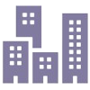
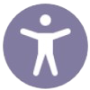
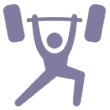

Hello! I'm Katie, a UX Designer based in Seattle, WA .
I graduated with a Bachelor's degree in Human-Computer Interaction
from the University of Washington and am currently working as an Associate UX Designer at iSoftStone  .
.
I believe in inclusivity , sustainability , and crafting experiences that are both visually appealing and enjoyable. My goal is to craft digital solutions that resonate with users, making everyone, regardless of their background or abilities, feels seen, valued, and empowered. Through thoughtful, user-centered design, I aspire to make the digital world more inclusive for everyone.
When I'm not working, I enjoy cooking , weightlifting , playing my violin , and watching kdramas .
Connect with me on LinkedIn or email me at katiexinran@gmail.com to collaborate on a project!